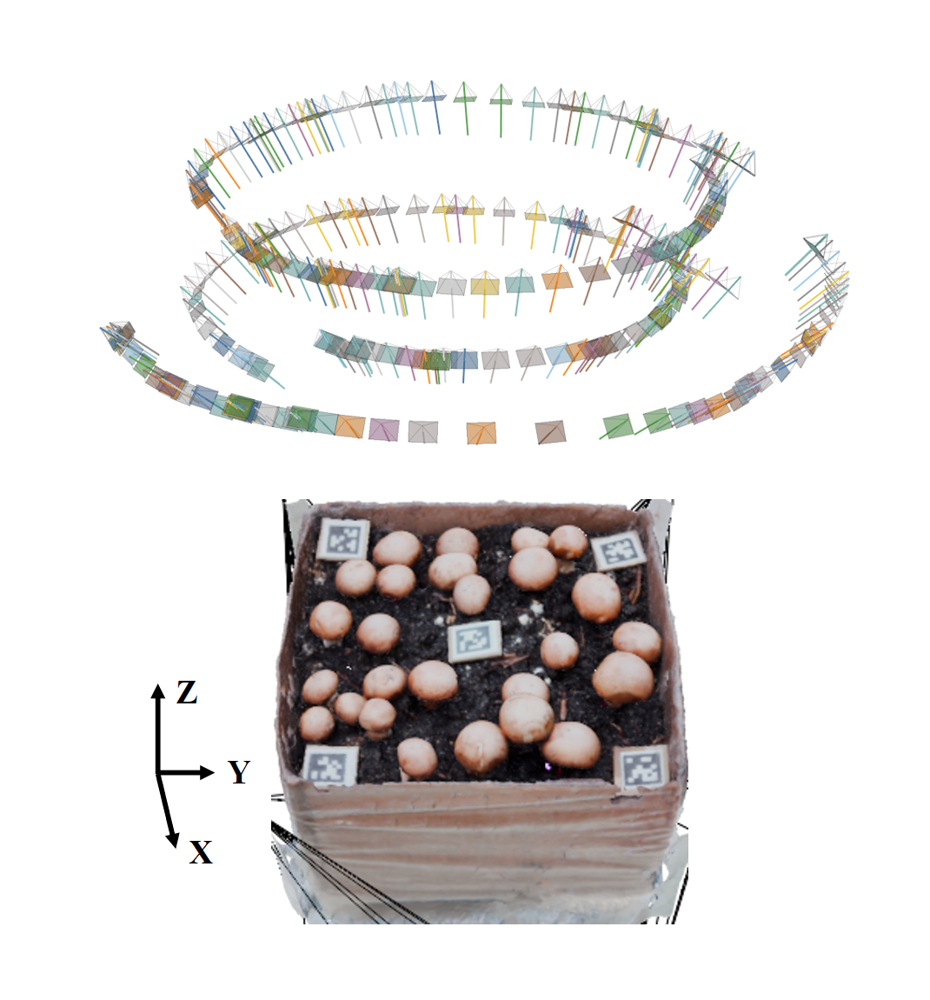
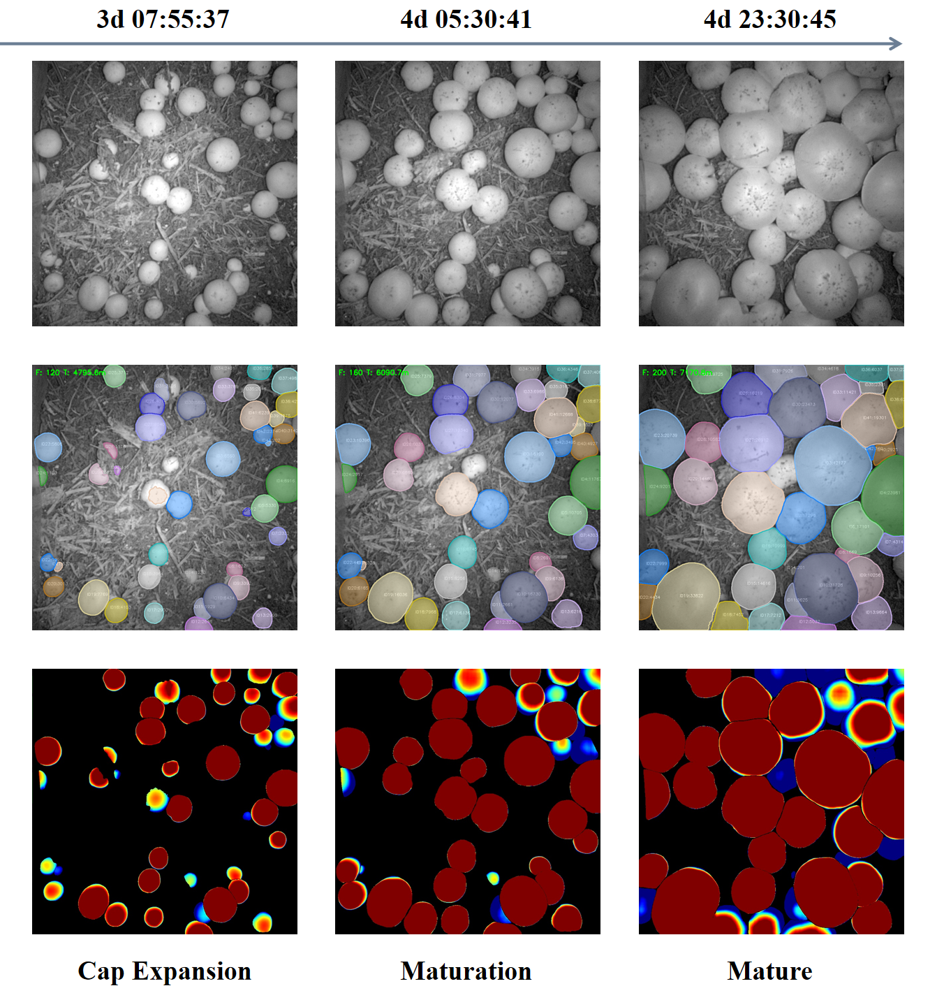

Fan Wu
I am an M.S. student in Biological and Agricultural Engineering at North Carolina State University. My research focuses on AI-driven agricultural robotics, 3D vision, mushroom digital twins, and intelligent harvesting systems.
My current work includes multi-view RGB-D mushroom pose estimation, 3D reconstruction for mushroom growth monitoring, and robotic harvesting systems for controlled-environment agriculture.
Email / CV / Google Scholar / LinkedIn / Github

Research
My research interests lie at the intersection of agricultural robotics, 3D reconstruction, machine vision, and intelligent harvesting. I aim to develop robust perception systems for mushroom cultivation, growth monitoring, digital twins, and robotic harvesting in real-world environments.

